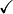

3.3. Tracing¶
The tracing subsystem is one of the most important mechanisms to understand in ns-3. In most cases, ns-3 users will have a brilliant idea for some new and improved networking feature. In order to verify that this idea works, the researcher will make changes to an existing system and then run experiments to see how the new feature behaves by gathering statistics that capture the behavior of the feature.
In other words, the whole point of running a simulation is to generate output for further study. In ns-3, the subsystem that enables a researcher to do this is the tracing subsystem.
3.3.1. Tracing Motivation¶
There are many ways to get information out of a program. The most straightforward way is to just directly print the information to the standard output, as in,
#include <iostream>
...
int main()
{
...
std::cout << "The value of x is " << x << std::endl;
...
}
This is workable in small environments, but as your simulations get more and more complicated, you end up with more and more prints and the task of parsing and performing computations on the output begins to get harder and harder.
Another thing to consider is that every time a new tidbit is needed, the software core must be edited and another print introduced. There is no standardized way to control all of this output, so the amount of output tends to grow without bounds. Eventually, the bandwidth required for simply outputting this information begins to limit the running time of the simulation. The output files grow to enormous sizes and parsing them becomes a problem.
ns-3 provides a simple mechanism for logging and providing some control over output via Log Components, but the level of control is not very fine grained at all. The logging module is a relatively blunt instrument.
It is desirable to have a facility that allows one to reach into the core system and only get the information required without having to change and recompile the core system. Even better would be a system that notified the user when an item of interest changed or an interesting event happened.
The ns-3 tracing system is designed to work along those lines and is well-integrated with the Attribute and Config substems allowing for relatively simple use scenarios.
3.3.2. Overview¶
The tracing subsystem relies heavily on the ns-3 Callback and Attribute mechanisms. You should read and understand the corresponding sections of the manual before attempting to understand the tracing system.
The ns-3 tracing system is built on the concepts of independent tracing sources and tracing sinks; along with a uniform mechanism for connecting sources to sinks.
Trace sources are entities that can signal events that happen in a simulation and provide access to interesting underlying data. For example, a trace source could indicate when a packet is received by a net device and provide access to the packet contents for interested trace sinks. A trace source might also indicate when an interesting state change happens in a model. For example, the congestion window of a TCP model is a prime candidate for a trace source.
Trace sources are not useful by themselves; they must be connected to other pieces of code that actually do something useful with the information provided by the source. The entities that consume trace information are called trace sinks. Trace sources are generators of events and trace sinks are consumers.
This explicit division allows for large numbers of trace sources to be scattered around the system in places which model authors believe might be useful. Unless a user connects a trace sink to one of these sources, nothing is output. This arrangement allows relatively unsophisticated users to attach new types of sinks to existing tracing sources, without requiring editing and recompiling the core or models of the simulator.
There can be zero or more consumers of trace events generated by a trace source. One can think of a trace source as a kind of point-to-multipoint information link.
The “transport protocol” for this conceptual point-to-multipoint link is an
ns-3 Callback.
Recall from the Callback Section that callback facility is a way to allow two modules in the system to communicate via function calls while at the same time decoupling the calling function from the called class completely. This is the same requirement as outlined above for the tracing system.
Basically, a trace source is a callback to which multiple functions may be
registered. When a trace sink expresses interest in receiving trace events, it
adds a callback to a list of callbacks held by the trace source. When an
interesting event happens, the trace source invokes its operator() providing
zero or more parameters. This tells the source to go through its list of
callbacks invoking each one in turn. In this way, the parameter(s) are
communicated to the trace sinks, which are just functions.
3.3.2.1. The Simplest Example¶
It will be useful to go walk a quick example just to reinforce what we’ve said.:
#include "ns3/object.h"
#include "ns3/uinteger.h"
#include "ns3/traced-value.h""
#include "ns3/trace-source-accessor.h"
#include <iostream>
using namespace ns3;
The first thing to do is include the required files. As mentioned above, the
trace system makes heavy use of the Object and Attribute systems. The first two
includes bring in the declarations for those systems. The file,
traced-value.h brings in the required declarations for tracing data that
obeys value semantics.
In general, value semantics just means that you can pass the object around, not an address. In order to use value semantics at all you have to have an object with an associated copy constructor and assignment operator available. We extend the requirements to talk about the set of operators that are pre-defined for plain-old-data (POD) types. Operator=, operator++, operator–, operator+, operator==, etc.
What this all means is that you will be able to trace changes to an object made using those operators.:
class MyObject : public Object
{
public:
static TypeId GetTypeId()
{
static TypeId tid = TypeId("MyObject")
.SetParent(Object::GetTypeId())
.AddConstructor<MyObject>()
.AddTraceSource("MyInteger",
"An integer value to trace.",
MakeTraceSourceAccessor(&MyObject::m_myInt))
;
return tid;
}
MyObject() {}
TracedValue<uint32_t> m_myInt;
};
Since the tracing system is integrated with Attributes, and Attributes work with
Objects, there must be an ns-3 Object for the trace source to live in. The
two important lines of code are the .AddTraceSource and the TracedValue
declaration.
The .AddTraceSource provides the “hooks” used for connecting the trace
source to the outside world. The TracedValue declaration provides the
infrastructure that overloads the operators mentioned above and drives the
callback process.:
void
IntTrace(Int oldValue, Int newValue)
{
std::cout << "Traced " << oldValue << " to " << newValue << std::endl;
}
This is the definition of the trace sink. It corresponds directly to a callback
function. This function will be called whenever one of the operators of the
TracedValue is executed.:
int
main(int argc, char *argv[])
{
Ptr<MyObject> myObject = CreateObject<MyObject>();
myObject->TraceConnectWithoutContext("MyInteger", MakeCallback(&IntTrace));
myObject->m_myInt = 1234;
}
In this snippet, the first thing that needs to be done is to create the object in which the trace source lives.
The next step, the TraceConnectWithoutContext, forms the connection between
the trace source and the trace sink. Notice the MakeCallback template
function. Recall from the Callback section that this creates the specialized
functor responsible for providing the overloaded operator() used to “fire”
the callback. The overloaded operators (++, –, etc.) will use this
operator() to actually invoke the callback. The
TraceConnectWithoutContext, takes a string parameter that provides the name
of the Attribute assigned to the trace source. Let’s ignore the bit about
context for now since it is not important yet.
Finally, the line,:
myObject->m_myInt = 1234;
should be interpreted as an invocation of operator= on the member variable
m_myInt with the integer passed as a parameter. It turns out
that this operator is defined (by TracedValue) to execute a callback that
returns void and takes two integer values as parameters – an old value and a
new value for the integer in question. That is exactly the function signature
for the callback function we provided – IntTrace.
To summarize, a trace source is, in essence, a variable that holds a list of callbacks. A trace sink is a function used as the target of a callback. The Attribute and object type information systems are used to provide a way to connect trace sources to trace sinks. The act of “hitting” a trace source is executing an operator on the trace source which fires callbacks. This results in the trace sink callbacks registering interest in the source being called with the parameters provided by the source.
3.3.2.2. Using the Config Subsystem to Connect to Trace Sources¶
The TraceConnectWithoutContext call shown above in the simple example is
actually very rarely used in the system. More typically, the Config
subsystem is used to allow selecting a trace source in the system using what is
called a config path.
For example, one might find something that looks like the following in the
system (taken from examples/tcp-large-transfer.cc):
void CwndTracer(uint32_t oldval, uint32_t newval) {}
...
Config::ConnectWithoutContext(
"/NodeList/0/$ns3::TcpL4Protocol/SocketList/0/CongestionWindow",
MakeCallback(&CwndTracer));
This should look very familiar. It is the same thing as the previous example,
except that a static member function of class Config is being called instead
of a method on Object; and instead of an Attribute name, a path is being
provided.
The first thing to do is to read the path backward. The last segment of the path
must be an Attribute of an Object. In fact, if you had a pointer to the
Object that has the “CongestionWindow” Attribute handy (call it
theObject), you could write this just like the previous example:
void CwndTracer(uint32_t oldval, uint32_t newval) {}
...
theObject->TraceConnectWithoutContext("CongestionWindow", MakeCallback(&CwndTracer));
It turns out that the code for Config::ConnectWithoutContext does exactly
that. This function takes a path that represents a chain of Object pointers
and follows them until it gets to the end of the path and interprets the last
segment as an Attribute on the last object. Let’s walk through what
happens.
The leading “/” character in the path refers to a so-called namespace. One of the
predefined namespaces in the config system is “NodeList” which is a list of all of
the nodes in the simulation. Items in the list are referred to by indices into the
list, so “/NodeList/0” refers to the zeroth node in the list of nodes created by
the simulation. This node is actually a Ptr<Node> and so is a subclass of
an ns3::Object.
As described in the Object model section, ns-3 supports an object
aggregation model. The next path segment begins with the “$” character which
indicates a GetObject call should be made looking for the type that follows.
When a node is initialized by an InternetStackHelper a number of interfaces
are aggregated to the node. One of these is the TCP level four protocol. The
runtime type of this protocol object is ns3::TcpL4Protocol''. When the
``GetObject is executed, it returns a pointer to the object of this type.
The TcpL4Protocol class defines an Attribute called “SocketList” which is a
list of sockets. Each socket is actually an ns3::Object with its own
Attributes. The items in the list of sockets are referred to by index just
as in the NodeList, so “SocketList/0” refers to the zeroth socket in the list of
sockets on the zeroth node in the NodeList – the first node constructed in the
simulation.
This socket, the type of which turns out to be an ns3::TcpSocketImpl defines
an attribute called “CongestionWindow” which is a TracedValue<uint32_t>.
The Config::ConnectWithoutContext now does a,:
object->TraceConnectWithoutContext("CongestionWindow", MakeCallback(&CwndTracer));
using the object pointer from “SocketList/0” which makes the connection between
the trace source defined in the socket to the callback – CwndTracer.
Now, whenever a change is made to the TracedValue<uint32_t> representing the
congestion window in the TCP socket, the registered callback will be executed
and the function CwndTracer will be called printing out the old and new
values of the TCP congestion window.
As a final note, the Config::Connect…() functions will throw an error if the targeted TraceSource does not exist at the path given. There are also “fail-safe” versions, Config::Connect…FailSafe(), if you can’t be sure the TraceSource exists. The fail-safe versions return true if at least one connection could be made.
3.3.3. Using the Tracing API¶
There are three levels of interaction with the tracing system:
Beginning user can easily control which objects are participating in tracing;
Intermediate users can extend the tracing system to modify the output format generated or use existing trace sources in different ways, without modifying the core of the simulator;
Advanced users can modify the simulator core to add new tracing sources and sinks.
3.3.4. Using Trace Helpers¶
The ns-3 trace helpers provide a rich environment for configuring and selecting different trace events and writing them to files. In previous sections, primarily “Building Topologies,” we have seen several varieties of the trace helper methods designed for use inside other (device) helpers.
Perhaps you will recall seeing some of these variations:
pointToPoint.EnablePcapAll("second");
pointToPoint.EnablePcap("second", p2pNodes.Get(0)->GetId(), 0);
csma.EnablePcap("third", csmaDevices.Get(0), true);
pointToPoint.EnableAsciiAll(ascii.CreateFileStream("myfirst.tr"));
What may not be obvious, though, is that there is a consistent model for all of the trace-related methods found in the system. We will now take a little time and take a look at the “big picture”.
There are currently two primary use cases of the tracing helpers in ns-3: Device helpers and protocol helpers. Device helpers look at the problem of specifying which traces should be enabled through a node, device pair. For example, you may want to specify that pcap tracing should be enabled on a particular device on a specific node. This follows from the ns-3 device conceptual model, and also the conceptual models of the various device helpers. Following naturally from this, the files created follow a <prefix>-<node>-<device> naming convention.
Protocol helpers look at the problem of specifying which traces should be enabled through a protocol and interface pair. This follows from the ns-3 protocol stack conceptual model, and also the conceptual models of internet stack helpers. Naturally, the trace files should follow a <prefix>-<protocol>-<interface> naming convention.
The trace helpers therefore fall naturally into a two-dimensional taxonomy. There are subtleties that prevent all four classes from behaving identically, but we do strive to make them all work as similarly as possible; and whenever possible there are analogs for all methods in all classes.
pcap
ascii
Device Helper

Protocol Helper
We use an approach called a mixin to add tracing functionality to our helper
classes. A mixin is a class that provides functionality to that is
inherited by a subclass. Inheriting from a mixin is not considered a form of
specialization but is really a way to collect functionality.
Let’s take a quick look at all four of these cases and their respective
mixins.
3.3.4.1. Pcap Tracing Device Helpers¶
The goal of these helpers is to make it easy to add a consistent pcap trace
facility to an ns-3 device. We want all of the various flavors of pcap tracing
to work the same across all devices, so the methods of these helpers are
inherited by device helpers. Take a look at src/network/helper/trace-helper.h if you
want to follow the discussion while looking at real code.
The class PcapHelperForDevice is a mixin provides the high level
functionality for using pcap tracing in an ns-3 device. Every device must
implement a single virtual method inherited from this class.:
virtual void EnablePcapInternal(std::string prefix, Ptr<NetDevice> nd, bool promiscuous) = 0;
The signature of this method reflects the device-centric view of the situation
at this level. All of the public methods inherited from class
PcapUserHelperForDevice reduce to calling this single device-dependent
implementation method. For example, the lowest level pcap method,:
void EnablePcap(std::string prefix, Ptr<NetDevice> nd, bool promiscuous = false, bool explicitFilename = false);
will call the device implementation of EnablePcapInternal directly. All
other public pcap tracing methods build on this implementation to provide
additional user-level functionality. What this means to the user is that all
device helpers in the system will have all of the pcap trace methods available;
and these methods will all work in the same way across devices if the device
implements EnablePcapInternal correctly.
3.3.4.1.1. Pcap Tracing Device Helper Methods¶
void EnablePcap(std::string prefix, Ptr<NetDevice> nd,
bool promiscuous = false, bool explicitFilename = false);
void EnablePcap(std::string prefix, std::string ndName,
bool promiscuous = false, bool explicitFilename = false);
void EnablePcap(std::string prefix, NetDeviceContainer d,
bool promiscuous = false);
void EnablePcap(std::string prefix, NodeContainer n,
bool promiscuous = false);
void EnablePcap(std::string prefix, uint32_t nodeid, uint32_t deviceid,
bool promiscuous = false);
void EnablePcapAll(std::string prefix, bool promiscuous = false);
In each of the methods shown above, there is a default parameter called
promiscuous that defaults to false. This parameter indicates that the trace
should not be gathered in promiscuous mode. If you do want your traces to
include all traffic seen by the device (and if the device supports a promiscuous
mode) simply add a true parameter to any of the calls above. For example,:
Ptr<NetDevice> nd;
...
helper.EnablePcap("prefix", nd, true);
will enable promiscuous mode captures on the NetDevice specified by nd.
The first two methods also include a default parameter called
explicitFilename that will be discussed below.
You are encouraged to peruse the Doxygen for class PcapHelperForDevice to
find the details of these methods; but to summarize …
You can enable pcap tracing on a particular node/net-device pair by providing a
Ptr<NetDevice> to an EnablePcap method. The Ptr<Node> is implicit
since the net device must belong to exactly one Node. For example,:
Ptr<NetDevice> nd;
...
helper.EnablePcap("prefix", nd);
You can enable pcap tracing on a particular node/net-device pair by providing a
std::string representing an object name service string to an EnablePcap
method. The Ptr<NetDevice> is looked up from the name string. Again, the
<Node> is implicit since the named net device must belong to exactly one
Node. For example,:
Names::Add("server" ...);
Names::Add("server/eth0" ...);
...
helper.EnablePcap("prefix", "server/ath0");
You can enable pcap tracing on a collection of node/net-device pairs by
providing a NetDeviceContainer. For each NetDevice in the container the
type is checked. For each device of the proper type (the same type as is
managed by the device helper), tracing is enabled. Again, the <Node> is
implicit since the found net device must belong to exactly one Node. For
example,:
NetDeviceContainer d = ...;
...
helper.EnablePcap("prefix", d);
You can enable pcap tracing on a collection of node/net-device pairs by
providing a NodeContainer. For each Node in the NodeContainer its
attached NetDevices are iterated. For each NetDevice attached to each
node in the container, the type of that device is checked. For each device of
the proper type (the same type as is managed by the device helper), tracing is
enabled.:
NodeContainer n;
...
helper.EnablePcap("prefix", n);
You can enable pcap tracing on the basis of node ID and device ID as well as
with explicit Ptr. Each Node in the system has an integer node ID and
each device connected to a node has an integer device ID.:
helper.EnablePcap("prefix", 21, 1);
Finally, you can enable pcap tracing for all devices in the system, with the same type as that managed by the device helper.:
helper.EnablePcapAll("prefix");
3.3.4.1.2. Pcap Tracing Device Helper Filename Selection¶
Implicit in the method descriptions above is the construction of a complete
filename by the implementation method. By convention, pcap traces in the ns-3
system are of the form <prefix>-<node id>-<device id>.pcap
As previously mentioned, every node in the system will have a system-assigned
node id; and every device will have an interface index (also called a device id)
relative to its node. By default, then, a pcap trace file created as a result
of enabling tracing on the first device of node 21 using the prefix “prefix”
would be prefix-21-1.pcap.
You can always use the ns-3 object name service to make this more clear. For
example, if you use the object name service to assign the name “server” to node
21, the resulting pcap trace file name will automatically become,
prefix-server-1.pcap and if you also assign the name “eth0” to the device,
your pcap file name will automatically pick this up and be called
prefix-server-eth0.pcap.
Finally, two of the methods shown above,:
void EnablePcap(std::string prefix, Ptr<NetDevice> nd, bool promiscuous = false, bool explicitFilename = false);
void EnablePcap(std::string prefix, std::string ndName, bool promiscuous = false, bool explicitFilename = false);
have a default parameter called explicitFilename. When set to true, this
parameter disables the automatic filename completion mechanism and allows you to
create an explicit filename. This option is only available in the methods which
enable pcap tracing on a single device.
For example, in order to arrange for a device helper to create a single
promiscuous pcap capture file of a specific name (my-pcap-file.pcap) on a
given device, one could:
Ptr<NetDevice> nd;
...
helper.EnablePcap("my-pcap-file.pcap", nd, true, true);
The first true parameter enables promiscuous mode traces and the second
tells the helper to interpret the prefix parameter as a complete filename.
3.3.4.2. Ascii Tracing Device Helpers¶
The behavior of the ASCII trace helper mixin is substantially similar to
the pcap version. Take a look at src/network/helper/trace-helper.h if you want to
follow the discussion while looking at real code.
The class AsciiTraceHelperForDevice adds the high level functionality for
using ASCII tracing to a device helper class. As in the pcap case, every device
must implement a single virtual method inherited from the ASCII trace
mixin.:
virtual void EnableAsciiInternal(Ptr<OutputStreamWrapper> stream, std::string prefix, Ptr<NetDevice> nd) = 0;
The signature of this method reflects the device-centric view of the situation
at this level; and also the fact that the helper may be writing to a shared
output stream. All of the public ASCII-trace-related methods inherited from
class AsciiTraceHelperForDevice reduce to calling this single device-
dependent implementation method. For example, the lowest level ASCII trace
methods,:
void EnableAscii(std::string prefix, Ptr<NetDevice> nd);
void EnableAscii(Ptr<OutputStreamWrapper> stream, Ptr<NetDevice> nd);
will call the device implementation of EnableAsciiInternal directly,
providing either a valid prefix or stream. All other public ASCII tracing
methods will build on these low-level functions to provide additional user-level
functionality. What this means to the user is that all device helpers in the
system will have all of the ASCII trace methods available; and these methods
will all work in the same way across devices if the devices implement
EnablAsciiInternal correctly.
3.3.4.2.1. Ascii Tracing Device Helper Methods¶
void EnableAscii(std::string prefix, Ptr<NetDevice> nd);
void EnableAscii(Ptr<OutputStreamWrapper> stream, Ptr<NetDevice> nd);
void EnableAscii(std::string prefix, std::string ndName);
void EnableAscii(Ptr<OutputStreamWrapper> stream, std::string ndName);
void EnableAscii(std::string prefix, NetDeviceContainer d);
void EnableAscii(Ptr<OutputStreamWrapper> stream, NetDeviceContainer d);
void EnableAscii(std::string prefix, NodeContainer n);
void EnableAscii(Ptr<OutputStreamWrapper> stream, NodeContainer n);
void EnableAscii(std::string prefix, uint32_t nodeid, uint32_t deviceid);
void EnableAscii(Ptr<OutputStreamWrapper> stream, uint32_t nodeid, uint32_t deviceid);
void EnableAsciiAll(std::string prefix);
void EnableAsciiAll(Ptr<OutputStreamWrapper> stream);
You are encouraged to peruse the Doxygen for class TraceHelperForDevice to
find the details of these methods; but to summarize …
There are twice as many methods available for ASCII tracing as there were for pcap tracing. This is because, in addition to the pcap-style model where traces from each unique node/device pair are written to a unique file, we support a model in which trace information for many node/device pairs is written to a common file. This means that the <prefix>-<node>-<device> file name generation mechanism is replaced by a mechanism to refer to a common file; and the number of API methods is doubled to allow all combinations.
Just as in pcap tracing, you can enable ASCII tracing on a particular
node/net-device pair by providing a Ptr<NetDevice> to an EnableAscii
method. The Ptr<Node> is implicit since the net device must belong to
exactly one Node. For example,:
Ptr<NetDevice> nd;
...
helper.EnableAscii("prefix", nd);
In this case, no trace contexts are written to the ASCII trace file since they would be redundant. The system will pick the file name to be created using the same rules as described in the pcap section, except that the file will have the suffix “.tr” instead of “.pcap”.
If you want to enable ASCII tracing on more than one net device and have all traces sent to a single file, you can do that as well by using an object to refer to a single file:
Ptr<NetDevice> nd1;
Ptr<NetDevice> nd2;
...
Ptr<OutputStreamWrapper> stream = asciiTraceHelper.CreateFileStream("trace-file-name.tr");
...
helper.EnableAscii(stream, nd1);
helper.EnableAscii(stream, nd2);
In this case, trace contexts are written to the ASCII trace file since they are required to disambiguate traces from the two devices. Note that since the user is completely specifying the file name, the string should include the “.tr” for consistency.
You can enable ASCII tracing on a particular node/net-device pair by providing a
std::string representing an object name service string to an
EnablePcap method. The Ptr<NetDevice> is looked up from the name
string. Again, the <Node> is implicit since the named net device must
belong to exactly one Node. For example,:
Names::Add("client" ...);
Names::Add("client/eth0" ...);
Names::Add("server" ...);
Names::Add("server/eth0" ...);
...
helper.EnableAscii("prefix", "client/eth0");
helper.EnableAscii("prefix", "server/eth0");
This would result in two files named prefix-client-eth0.tr and
prefix-server-eth0.tr with traces for each device in the respective trace
file. Since all of the EnableAscii functions are overloaded to take a stream
wrapper, you can use that form as well:
Names::Add("client" ...);
Names::Add("client/eth0" ...);
Names::Add("server" ...);
Names::Add("server/eth0" ...);
...
Ptr<OutputStreamWrapper> stream = asciiTraceHelper.CreateFileStream("trace-file-name.tr");
...
helper.EnableAscii(stream, "client/eth0");
helper.EnableAscii(stream, "server/eth0");
This would result in a single trace file called trace-file-name.tr that
contains all of the trace events for both devices. The events would be
disambiguated by trace context strings.
You can enable ASCII tracing on a collection of node/net-device pairs by
providing a NetDeviceContainer. For each NetDevice in the container the
type is checked. For each device of the proper type (the same type as is managed
by the device helper), tracing is enabled. Again, the <Node> is implicit
since the found net device must belong to exactly one Node. For example,:
NetDeviceContainer d = ...;
...
helper.EnableAscii("prefix", d);
This would result in a number of ASCII trace files being created, each of which follows the <prefix>-<node id>-<device id>.tr convention. Combining all of the traces into a single file is accomplished similarly to the examples above:
NetDeviceContainer d = ...;
...
Ptr<OutputStreamWrapper> stream = asciiTraceHelper.CreateFileStream("trace-file-name.tr");
...
helper.EnableAscii(stream, d);
You can enable ascii tracing on a collection of node/net-device pairs by
providing a NodeContainer. For each Node in the NodeContainer its
attached NetDevices are iterated. For each NetDevice attached to each
node in the container, the type of that device is checked. For each device of
the proper type (the same type as is managed by the device helper), tracing is
enabled.:
NodeContainer n;
...
helper.EnableAscii("prefix", n);
This would result in a number of ASCII trace files being created, each of which follows the <prefix>-<node id>-<device id>.tr convention. Combining all of the traces into a single file is accomplished similarly to the examples above:
You can enable pcap tracing on the basis of node ID and device ID as well as
with explicit Ptr. Each Node in the system has an integer node ID and
each device connected to a node has an integer device ID.:
helper.EnableAscii("prefix", 21, 1);
Of course, the traces can be combined into a single file as shown above.
Finally, you can enable pcap tracing for all devices in the system, with the same type as that managed by the device helper.:
helper.EnableAsciiAll("prefix");
This would result in a number of ASCII trace files being created, one for every device in the system of the type managed by the helper. All of these files will follow the <prefix>-<node id>-<device id>.tr convention. Combining all of the traces into a single file is accomplished similarly to the examples above.
3.3.4.2.2. Ascii Tracing Device Helper Filename Selection¶
Implicit in the prefix-style method descriptions above is the construction of
the complete filenames by the implementation method. By convention, ASCII traces
in the ns-3 system are of the form <prefix>-<node id>-<device id>.tr.
As previously mentioned, every node in the system will have a system-assigned
node id; and every device will have an interface index (also called a device id)
relative to its node. By default, then, an ASCII trace file created as a result
of enabling tracing on the first device of node 21, using the prefix “prefix”,
would be prefix-21-1.tr.
You can always use the ns-3 object name service to make this more clear. For
example, if you use the object name service to assign the name “server” to node
21, the resulting ASCII trace file name will automatically become,
prefix-server-1.tr and if you also assign the name “eth0” to the device,
your ASCII trace file name will automatically pick this up and be called
prefix-server-eth0.tr.
3.3.4.3. Pcap Tracing Protocol Helpers¶
The goal of these mixins is to make it easy to add a consistent pcap trace
facility to protocols. We want all of the various flavors of pcap tracing to
work the same across all protocols, so the methods of these helpers are
inherited by stack helpers. Take a look at src/network/helper/trace-helper.h if you
want to follow the discussion while looking at real code.
In this section we will be illustrating the methods as applied to the protocol
Ipv4. To specify traces in similar protocols, just substitute the
appropriate type. For example, use a Ptr<Ipv6> instead of a Ptr<Ipv4>
and call EnablePcapIpv6 instead of EnablePcapIpv4.
The class PcapHelperForIpv4 provides the high level functionality for using
pcap tracing in the Ipv4 protocol. Each protocol helper enabling these
methods must implement a single virtual method inherited from this class. There
will be a separate implementation for Ipv6, for example, but the only
difference will be in the method names and signatures. Different method names
are required to disambiguate class Ipv4 from Ipv6 which are both derived
from class Object, and methods that share the same signature.:
virtual void EnablePcapIpv4Internal(std::string prefix, Ptr<Ipv4> ipv4, uint32_t interface) = 0;
The signature of this method reflects the protocol and interface-centric view of
the situation at this level. All of the public methods inherited from class
PcapHelperForIpv4 reduce to calling this single device-dependent
implementation method. For example, the lowest level pcap method,:
void EnablePcapIpv4(std::string prefix, Ptr<Ipv4> ipv4, uint32_t interface);
will call the device implementation of EnablePcapIpv4Internal directly. All
other public pcap tracing methods build on this implementation to provide
additional user-level functionality. What this means to the user is that all
protocol helpers in the system will have all of the pcap trace methods
available; and these methods will all work in the same way across protocols if
the helper implements EnablePcapIpv4Internal correctly.
3.3.4.3.1. Pcap Tracing Protocol Helper Methods¶
These methods are designed to be in one-to-one correspondence with the Node-
and NetDevice- centric versions of the device versions. Instead of
Node and NetDevice pair constraints, we use protocol and interface
constraints.
Note that just like in the device version, there are six methods:
void EnablePcapIpv4(std::string prefix, Ptr<Ipv4> ipv4, uint32_t interface);
void EnablePcapIpv4(std::string prefix, std::string ipv4Name, uint32_t interface);
void EnablePcapIpv4(std::string prefix, Ipv4InterfaceContainer c);
void EnablePcapIpv4(std::string prefix, NodeContainer n);
void EnablePcapIpv4(std::string prefix, uint32_t nodeid, uint32_t interface);
void EnablePcapIpv4All(std::string prefix);
You are encouraged to peruse the Doxygen for class PcapHelperForIpv4 to find
the details of these methods; but to summarize …
You can enable pcap tracing on a particular protocol/interface pair by providing
a Ptr<Ipv4> and interface to an EnablePcap method. For example,:
Ptr<Ipv4> ipv4 = node->GetObject<Ipv4>();
...
helper.EnablePcapIpv4("prefix", ipv4, 0);
You can enable pcap tracing on a particular node/net-device pair by providing a
std::string representing an object name service string to an EnablePcap
method. The Ptr<Ipv4> is looked up from the name string. For example,:
Names::Add("serverIPv4" ...);
...
helper.EnablePcapIpv4("prefix", "serverIpv4", 1);
You can enable pcap tracing on a collection of protocol/interface pairs by
providing an Ipv4InterfaceContainer. For each Ipv4 / interface pair in
the container the protocol type is checked. For each protocol of the proper type
(the same type as is managed by the device helper), tracing is enabled for the
corresponding interface. For example,:
NodeContainer nodes;
...
NetDeviceContainer devices = deviceHelper.Install(nodes);
...
Ipv4AddressHelper ipv4;
ipv4.SetBase("10.1.1.0", "255.255.255.0");
Ipv4InterfaceContainer interfaces = ipv4.Assign(devices);
...
helper.EnablePcapIpv4("prefix", interfaces);
You can enable pcap tracing on a collection of protocol/interface pairs by
providing a NodeContainer. For each Node in the NodeContainer the
appropriate protocol is found. For each protocol, its interfaces are enumerated
and tracing is enabled on the resulting pairs. For example,:
NodeContainer n;
...
helper.EnablePcapIpv4("prefix", n);
You can enable pcap tracing on the basis of node ID and interface as well. In
this case, the node-id is translated to a Ptr<Node> and the appropriate
protocol is looked up in the node. The resulting protocol and interface are used
to specify the resulting trace source.:
helper.EnablePcapIpv4("prefix", 21, 1);
Finally, you can enable pcap tracing for all interfaces in the system, with associated protocol being the same type as that managed by the device helper.:
helper.EnablePcapIpv4All("prefix");
3.3.4.3.2. Pcap Tracing Protocol Helper Filename Selection¶
Implicit in all of the method descriptions above is the construction of the
complete filenames by the implementation method. By convention, pcap traces
taken for devices in the ns-3 system are of the form <prefix>-<node
id>-<device id>.pcap. In the case of protocol traces, there is a one-to-one
correspondence between protocols and Nodes. This is because protocol
Objects are aggregated to Node Objects. Since there is no global
protocol id in the system, we use the corresponding node id in file naming.
Therefore there is a possibility for file name collisions in automatically
chosen trace file names. For this reason, the file name convention is changed
for protocol traces.
As previously mentioned, every node in the system will have a system-assigned node id. Since there is a one-to-one correspondence between protocol instances and node instances we use the node id. Each interface has an interface id relative to its protocol. We use the convention “<prefix>-n<node id>-i<interface id>.pcap” for trace file naming in protocol helpers.
Therefore, by default, a pcap trace file created as a result of enabling tracing on interface 1 of the Ipv4 protocol of node 21 using the prefix “prefix” would be “prefix-n21-i1.pcap”.
You can always use the ns-3 object name service to make this more clear. For example, if you use the object name service to assign the name “serverIpv4” to the Ptr<Ipv4> on node 21, the resulting pcap trace file name will automatically become, “prefix-nserverIpv4-i1.pcap”.
3.3.4.4. Ascii Tracing Protocol Helpers¶
The behavior of the ASCII trace helpers is substantially similar to the pcap
case. Take a look at src/network/helper/trace-helper.h if you want to follow the
discussion while looking at real code.
In this section we will be illustrating the methods as applied to the protocol
Ipv4. To specify traces in similar protocols, just substitute the
appropriate type. For example, use a Ptr<Ipv6> instead of a Ptr<Ipv4>
and call EnableAsciiIpv6 instead of EnableAsciiIpv4.
The class AsciiTraceHelperForIpv4 adds the high level functionality for
using ASCII tracing to a protocol helper. Each protocol that enables these
methods must implement a single virtual method inherited from this class.:
virtual void EnableAsciiIpv4Internal(Ptr<OutputStreamWrapper> stream, std::string prefix,
Ptr<Ipv4> ipv4, uint32_t interface) = 0;
The signature of this method reflects the protocol- and interface-centric view
of the situation at this level; and also the fact that the helper may be writing
to a shared output stream. All of the public methods inherited from class
PcapAndAsciiTraceHelperForIpv4 reduce to calling this single device-
dependent implementation method. For example, the lowest level ascii trace
methods,:
void EnableAsciiIpv4(std::string prefix, Ptr<Ipv4> ipv4, uint32_t interface);
void EnableAsciiIpv4(Ptr<OutputStreamWrapper> stream, Ptr<Ipv4> ipv4, uint32_t interface);
will call the device implementation of EnableAsciiIpv4Internal directly,
providing either the prefix or the stream. All other public ascii tracing
methods will build on these low-level functions to provide additional user-level
functionality. What this means to the user is that all device helpers in the
system will have all of the ascii trace methods available; and these methods
will all work in the same way across protocols if the protocols implement
EnablAsciiIpv4Internal correctly.
3.3.4.4.1. Ascii Tracing Device Helper Methods¶
void EnableAsciiIpv4(std::string prefix, Ptr<Ipv4> ipv4, uint32_t interface);
void EnableAsciiIpv4(Ptr<OutputStreamWrapper> stream, Ptr<Ipv4> ipv4, uint32_t interface);
void EnableAsciiIpv4(std::string prefix, std::string ipv4Name, uint32_t interface);
void EnableAsciiIpv4(Ptr<OutputStreamWrapper> stream, std::string ipv4Name, uint32_t interface);
void EnableAsciiIpv4(std::string prefix, Ipv4InterfaceContainer c);
void EnableAsciiIpv4(Ptr<OutputStreamWrapper> stream, Ipv4InterfaceContainer c);
void EnableAsciiIpv4(std::string prefix, NodeContainer n);
void EnableAsciiIpv4(Ptr<OutputStreamWrapper> stream, NodeContainer n);
void EnableAsciiIpv4(std::string prefix, uint32_t nodeid, uint32_t deviceid);
void EnableAsciiIpv4(Ptr<OutputStreamWrapper> stream, uint32_t nodeid, uint32_t interface);
void EnableAsciiIpv4All(std::string prefix);
void EnableAsciiIpv4All(Ptr<OutputStreamWrapper> stream);
You are encouraged to peruse the Doxygen for class PcapAndAsciiHelperForIpv4
to find the details of these methods; but to summarize …
There are twice as many methods available for ASCII tracing as there were for pcap tracing. This is because, in addition to the pcap-style model where traces from each unique protocol/interface pair are written to a unique file, we support a model in which trace information for many protocol/interface pairs is written to a common file. This means that the <prefix>-n<node id>-<interface> file name generation mechanism is replaced by a mechanism to refer to a common file; and the number of API methods is doubled to allow all combinations.
Just as in pcap tracing, you can enable ASCII tracing on a particular
protocol/interface pair by providing a Ptr<Ipv4> and an interface to an
EnableAscii method. For example,:
Ptr<Ipv4> ipv4;
...
helper.EnableAsciiIpv4("prefix", ipv4, 1);
In this case, no trace contexts are written to the ASCII trace file since they would be redundant. The system will pick the file name to be created using the same rules as described in the pcap section, except that the file will have the suffix “.tr” instead of “.pcap”.
If you want to enable ASCII tracing on more than one interface and have all traces sent to a single file, you can do that as well by using an object to refer to a single file. We have already something similar to this in the “cwnd” example above:
Ptr<Ipv4> protocol1 = node1->GetObject<Ipv4>();
Ptr<Ipv4> protocol2 = node2->GetObject<Ipv4>();
...
Ptr<OutputStreamWrapper> stream = asciiTraceHelper.CreateFileStream("trace-file-name.tr");
...
helper.EnableAsciiIpv4(stream, protocol1, 1);
helper.EnableAsciiIpv4(stream, protocol2, 1);
In this case, trace contexts are written to the ASCII trace file since they are required to disambiguate traces from the two interfaces. Note that since the user is completely specifying the file name, the string should include the “.tr” for consistency.
You can enable ASCII tracing on a particular protocol by providing a
std::string representing an object name service string to an EnablePcap
method. The Ptr<Ipv4> is looked up from the name string. The <Node> in
the resulting filenames is implicit since there is a one-to-one correspondence
between protocol instances and nodes, For example,:
Names::Add("node1Ipv4" ...);
Names::Add("node2Ipv4" ...);
...
helper.EnableAsciiIpv4("prefix", "node1Ipv4", 1);
helper.EnableAsciiIpv4("prefix", "node2Ipv4", 1);
This would result in two files named “prefix-nnode1Ipv4-i1.tr” and “prefix-nnode2Ipv4-i1.tr” with traces for each interface in the respective trace file. Since all of the EnableAscii functions are overloaded to take a stream wrapper, you can use that form as well:
Names::Add("node1Ipv4" ...);
Names::Add("node2Ipv4" ...);
...
Ptr<OutputStreamWrapper> stream = asciiTraceHelper.CreateFileStream("trace-file-name.tr");
...
helper.EnableAsciiIpv4(stream, "node1Ipv4", 1);
helper.EnableAsciiIpv4(stream, "node2Ipv4", 1);
This would result in a single trace file called “trace-file-name.tr” that contains all of the trace events for both interfaces. The events would be disambiguated by trace context strings.
You can enable ASCII tracing on a collection of protocol/interface pairs by
providing an Ipv4InterfaceContainer. For each protocol of the proper type
(the same type as is managed by the device helper), tracing is enabled for the
corresponding interface. Again, the <Node> is implicit since there is a
one-to-one correspondence between each protocol and its node. For example,:
NodeContainer nodes;
...
NetDeviceContainer devices = deviceHelper.Install(nodes);
...
Ipv4AddressHelper ipv4;
ipv4.SetBase("10.1.1.0", "255.255.255.0");
Ipv4InterfaceContainer interfaces = ipv4.Assign(devices);
...
...
helper.EnableAsciiIpv4("prefix", interfaces);
This would result in a number of ASCII trace files being created, each of which follows the <prefix>-n<node id>-i<interface>.tr convention. Combining all of the traces into a single file is accomplished similarly to the examples above:
NodeContainer nodes;
...
NetDeviceContainer devices = deviceHelper.Install(nodes);
...
Ipv4AddressHelper ipv4;
ipv4.SetBase("10.1.1.0", "255.255.255.0");
Ipv4InterfaceContainer interfaces = ipv4.Assign(devices);
...
Ptr<OutputStreamWrapper> stream = asciiTraceHelper.CreateFileStream("trace-file-name.tr");
...
helper.EnableAsciiIpv4(stream, interfaces);
You can enable ASCII tracing on a collection of protocol/interface pairs by
providing a NodeContainer. For each Node in the NodeContainer the
appropriate protocol is found. For each protocol, its interfaces are enumerated
and tracing is enabled on the resulting pairs. For example,:
NodeContainer n;
...
helper.EnableAsciiIpv4("prefix", n);
This would result in a number of ASCII trace files being created, each of which follows the <prefix>-<node id>-<device id>.tr convention. Combining all of the traces into a single file is accomplished similarly to the examples above:
You can enable pcap tracing on the basis of node ID and device ID as well. In
this case, the node-id is translated to a Ptr<Node> and the appropriate
protocol is looked up in the node. The resulting protocol and interface are
used to specify the resulting trace source.:
helper.EnableAsciiIpv4("prefix", 21, 1);
Of course, the traces can be combined into a single file as shown above.
Finally, you can enable ASCII tracing for all interfaces in the system, with associated protocol being the same type as that managed by the device helper.:
helper.EnableAsciiIpv4All("prefix");
This would result in a number of ASCII trace files being created, one for every interface in the system related to a protocol of the type managed by the helper. All of these files will follow the <prefix>-n<node id>-i<interface.tr convention. Combining all of the traces into a single file is accomplished similarly to the examples above.
3.3.4.4.2. Ascii Tracing Device Helper Filename Selection¶
Implicit in the prefix-style method descriptions above is the construction of the complete filenames by the implementation method. By convention, ASCII traces in the ns-3 system are of the form “<prefix>-<node id>-<device id>.tr.”
As previously mentioned, every node in the system will have a system-assigned node id. Since there is a one-to-one correspondence between protocols and nodes we use to node-id to identify the protocol identity. Every interface on a given protocol will have an interface index (also called simply an interface) relative to its protocol. By default, then, an ASCII trace file created as a result of enabling tracing on the first device of node 21, using the prefix “prefix”, would be “prefix-n21-i1.tr”. Use the prefix to disambiguate multiple protocols per node.
You can always use the ns-3 object name service to make this more clear. For example, if you use the object name service to assign the name “serverIpv4” to the protocol on node 21, and also specify interface one, the resulting ASCII trace file name will automatically become, “prefix-nserverIpv4-1.tr”.